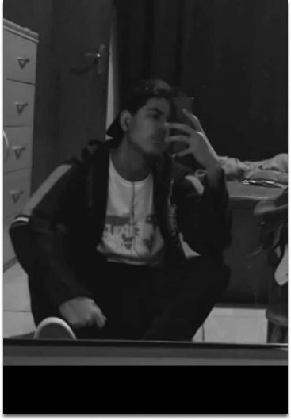

Eduardo Seidenfuhss
Me chamo Eduardo Figueiredo Seidenfuhss e entrei no Instituto Federal de Mato Grosso do Sul em 2020. Atualmente estou no 4° (quarto) semestre de informática, no qual desenvolvi (junto com meus colegas) esse projeto durante a disciplina de Desenvolvimento Web 1 (DW1).